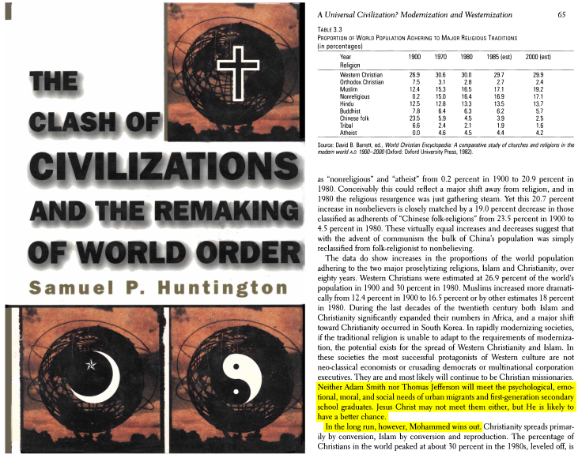

Muhammad SAW killed 3000 people. Why not accept Joseph Smith
The answer is actually pretty simple
The prophet (pbuh) didn’t kill anyone out of no reason out of facts they abused him for 13 years and he then went to Mecca but they went after him ; people hearing war will think barbaric in fact jesus according to the gospels in his 2nd coming he will fight with the sword in revelations 17:14 and after the interpretation of antonious fekri for this verse link:
https://st-takla.org/pub_Bible-Interpretations/Holy-Bible-Tafsir-02-New-Testament/Father-Antonious-Fekry/27-Sefr-El-Ro2ya/Tafseer-Sefr-Roia-Youhanna-El-Lahouty__01-Chapter-17.html#14
Let alone Matthew 10:34. So taking things out of context isn’t just ; another point I could be proud that my dear prophet stood up and defended his people to save them while your god ran away like in Matthew 4:12 your so called God called a canite a dog Matthew 15:26. The problem is jesus would have fought but Jesus was persecuted and had only 12 followers against an empire. The prophet had 22 wives but did he mistreat them he offered to all the chance to divorce but they chose him sunan al nisa’i 3203 he never hit a women nor a slave sahih Muslim 2328a he died with liberating al his slaves.and for Jesus didn’t die prophet (pbuh) did such a bad argument we believe the prophet pbuh is a human like us all Quran 18:110;3:144 so he would die so isn’t a problem but it is inappropriate for a god to die for 3 days even 1second even if so Enoch of the OT didn’t even die 1 sec so is he better than Jesus Paul was killed so is he false? ; these arguments fail to interpret so much. Last thing the prophet commanded us to only attack if we are attack as in Quran 2:190;9:4;9:6 and not to kill a women a baby a priest don’t destroy a synagogue or kill only those who fight u -[al-bayhaqui-in al sunan al kubra volume 9 page 90-91 hadith 17589] the prophet also said liberate captives that is the only source of slavery and be nice to them in sahih Muslim 1657a he also said if u strike them u must liberate them.
Mirza ghulam and prophet muhammed
Compare Mohammed as someone who claimed to be a prophet with Mizra Ghulam, and you will realize which one is a prophet and which one is not.
Prophet Mohammed literally succeeded in every role a modern person would dream of. He succeeded in conquests, social life with Kuffar, believers, and wives (i.e family), him being an illitrate brought a speech which no Arab genius can match. This is aside to his numerals prophecies and miracles that were witnessed and recorded. There is more to that, of course!
When I say he succeeded in those roles. you should know that he did not have the ability or materials to achieve succession in any of those roles by himself.
The main claim I am making and I am emphasising on it is that whoever reads the Quran and reads the authentic life and statements of Mohammed, he will not have any doubt that he is a real prophet.
Neither Adam Smith nor Thomas Jefferson will meet the psychological, emotional, moral, and social needs of urban migrants and first-generation secondary school graduates. Jesus Christ may not meet them either, but He is likely to have a better chance. In the long run, however, Mohammed wins out.
{Samuel P. Huntington, The Clash of Civilizations and the Remaking of World Order, Page 65}

Muhammad was a prince; he rallied his compatriots around him. In a few years, his Muslims conquered half the world. They plucked more souls from the false gods, knocked down more idols, razed more pagan temples in fifteen years, than the followers of Moses and Jesus Christ did in fifteen centuries.
{Napoleon Bonaparte, Napoleon's Egypt, page 130}